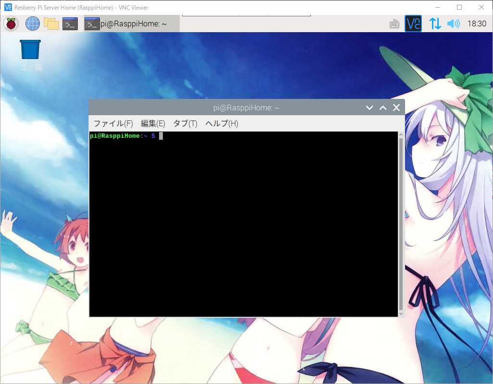
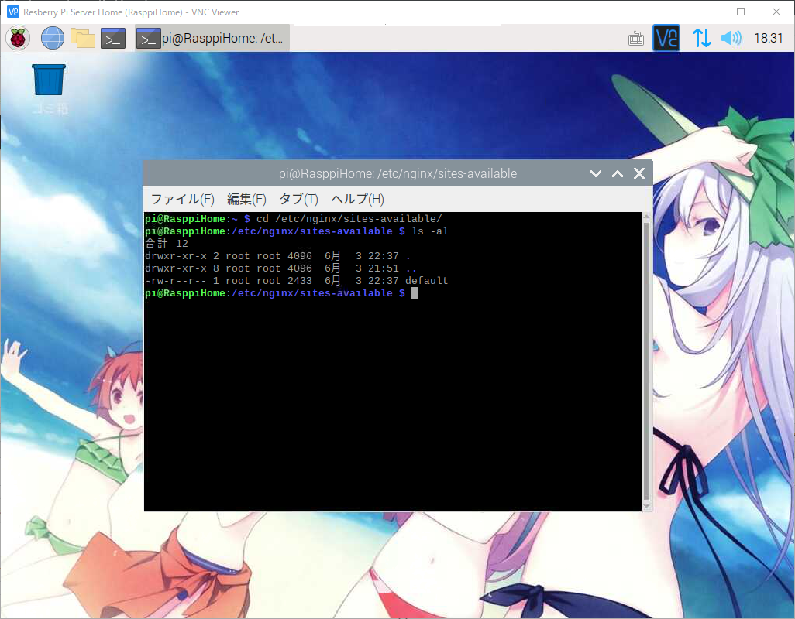
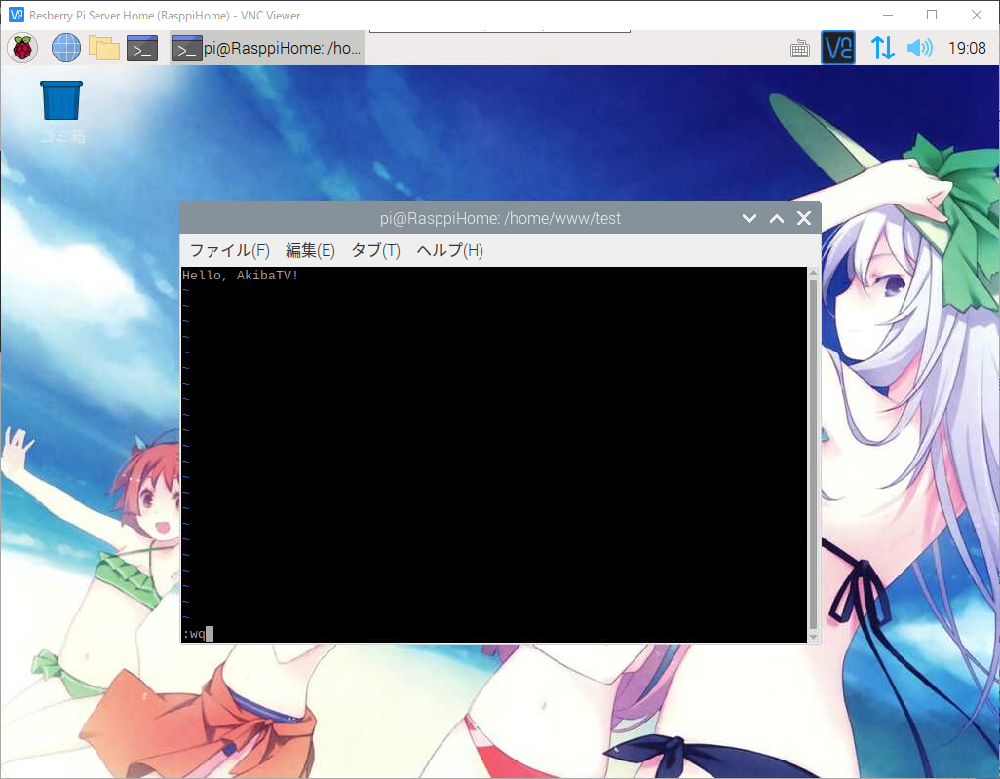
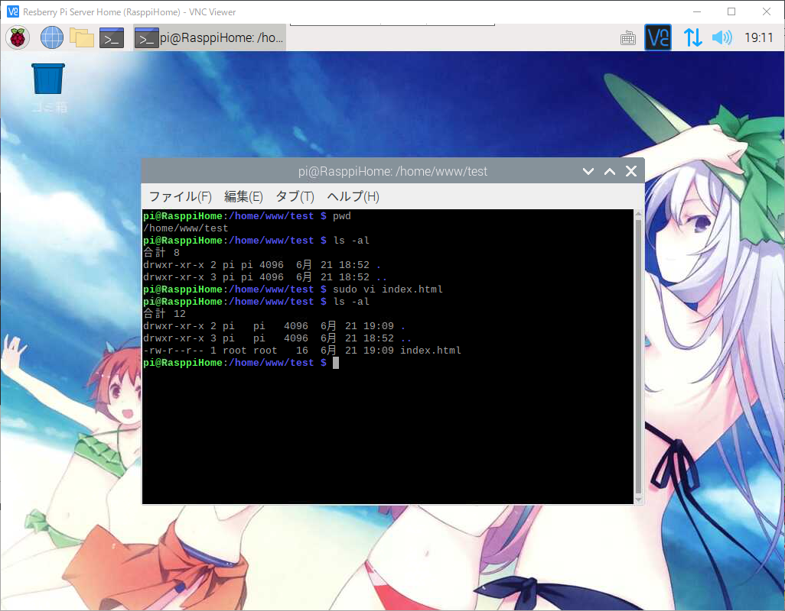
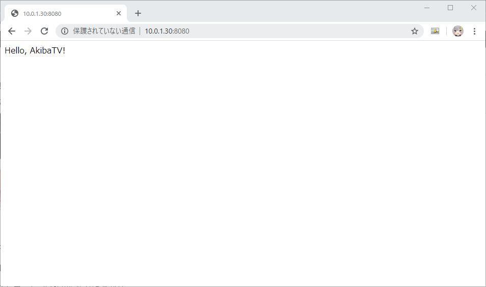

라즈베리파이 또는 리눅스에서 Nginx가상호스트 추가하기
라즈베리파이 또는 리눅스에서 Nginx가상호스트 추가하기
안녕하세요. AkibaTV입니다.
이번에 소개할 내용은 라즈베리파이 또는 리눅스에서 Nginx가상호스트 추가하기 입니다.
Nginx를 설치하시고 웹서버를 운영을 하는데 기본설정으로는 1개의 사이트밖에 연결을 할수가 없어서
도메인 갯수만큼 사이트를 연결하거나 아이피주소 1개로 다중사이트를 연결을 하고싶은데
어떻게 해야하는지 잘 모를경우에 어떻게하면 다중사이트로 연결을 시킬수 있는지
설명을 해드리도록 하겠습니다.
우선 기본적으로 라즈베리파이 또는 리눅스에 NPM (Nginx + PHP + MariaDB)을 설치를 해주시기 바랍니다.
저는 라즈베리파이를 사용하고 있기때문에 라즈베리파이를 기준으로 설명을 드리도록 하겠습니다.
우선 라즈베리파이를 VNC로 접속후 터미널을 실행을 해주시기 바랍니다.

아래의 명령어를 입력을 해주셔서 경로를 이동을 합니다.
1 | $ cd /etc/nginx/sites-available/ |

이동을 하셨으면 아래의 명령어를 입력을 해주셔서 새로운 가상호스트 파일을 추가를 합니다.
처음 사용자와 기존에 한번 해보신 분들을 위해서 준비를 했습니다.
처음 사용자의 경우는 파일을 새로 만들어 주셔야 하며
기존 사용자는 한번 만들어둔 파일을 추가로 복사를해서 수정해서 사용하실수가 있습니다.
1 | # 파일명의 경우에는 각자 원하시는 파일명으로 알아보기 쉽게 하시면 됩니다. |
저는 처음 생성하는 기준으로 작성을 하도록 하겠습니다.
vi 에디터가 실행이 되셨으면 아래의 내용을 각자의 환경에 맞게 수정하셔서 작성을 해주세요.
1 | server { |
추가를 하시고 :wq로 저장후 에디터를 빠져 나오시기 바랍니다.
리스트를 출력해 보시면 가상호스트 파일이 추가가 된걸 확인하실수 있습니다.
이제 추가한 가상호스트 파일을 Nginx에 적용이 되게끔 해주는 작업을 위해 아래의 명령어를 차례대로 입력해 주세요.
1 | # [sites-available]에 추가한 가상호스트 파일을 |
이동하신 경로에 심볼릭 링크가 제대로 있는지 확인을 하신후 아래의 명령어를 입력해 주세요.
1 | # [sites-enabled]에 추가한 가상호스트가 |
이렇게해서 가상호스트가 모두 완료가 되었습니다.
이제 실제로 제대로 연결이 되었는지 확인을 위해서 가상호스트에 설정한 경로로 이동을 합니다.
여기에 간단한 웹페이지 하나를 추가를 해보도록 하겠습니다.
1 | # html파일을 추가합니다. |
1 | # vi에디터가 실행이 되면 |

작성이 끝나셨으면 :wq를 입력후 vi에디터를 저장후 종료 합니다.

이제 추가한 파일의 사용자와 권한을 변경을 해주도록 하겠습니다.
아래의 명령어를 차례대로 입력해 주세요.
1 | # index.html에 대해서 사용자와 그룹을 pi로 설정 합니다. |
위와같이 index.html의 사용자와 권한이 변경된것을 확인 하실수 있습니다.
그럼 실제 확인을 해보아야 하기에 웹브라우저를 실행해 주시기 바랍니다.
웹브라우저의 주소창에 http://가상호스트에 추가한 도메인 또는 아이피:8080
가상호스트에 추가한 포트번호를 가장뒤에 꼭 붙여주세요.

접속을 하시면 정상적으로 접속이 되는것을 확인 하실수 있습니다.
이렇게해서 가상호스트를 추가하는 방법을 알아 보았습니다.